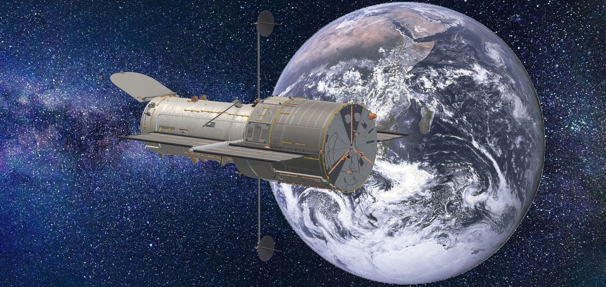
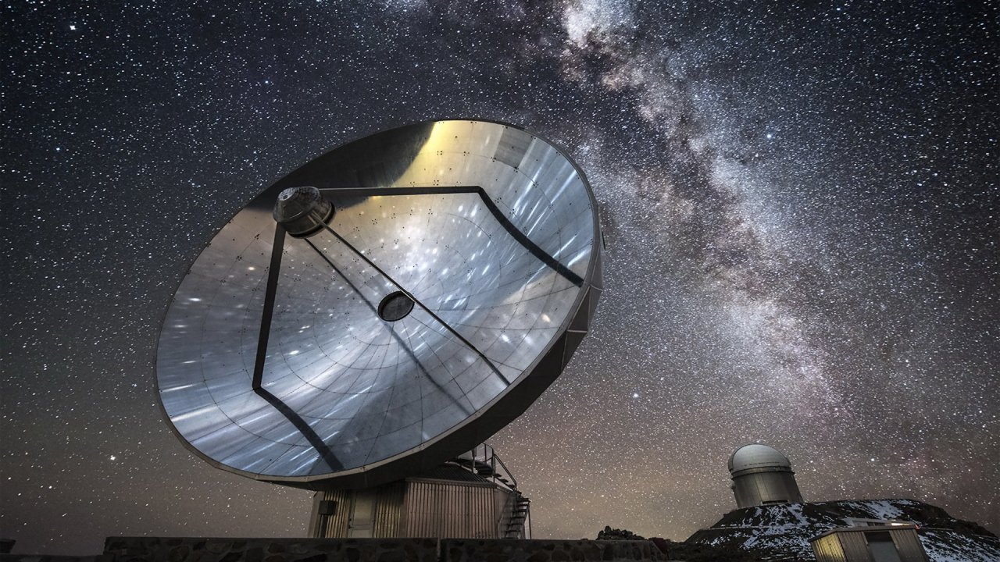
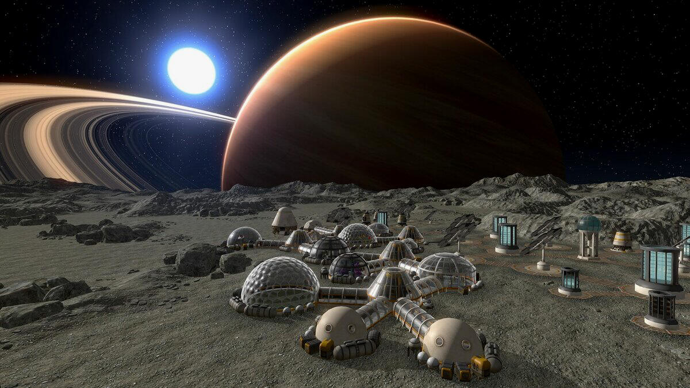

| Главная страница | Космос прошлого | Космос настоящего | Космос будущего |
Получившее столь бурное развитие в конце XX века космическое машиностроение не останавливается в своем прогрессе ни на один год. Спутники, казавшиеся еще каких-нибудь 5-10 лет назад верхом технической мысли, сменяют на орбите новые поколения космических аппаратов. И хотя эволюция искусственных спутников Земли становится все более скоротечной, вглядываясь в недалекое будущее, можно попытаться увидеть основные перспективы развития беспилотной космонавтики.

Летающие в космосе рентгеновские и оптические телескопы уже подарили ученым немало открытий. Теперь же к запуску готовятся целые орбитальные комплексы, оснащенные этими приборами. Такие системы позволят провести массовое исследование звезд нашей Галактики на предмет наличия у них планет

Ни для кого не секрет, что современные радиотелескопы земного базирования получают картинки звездного неба с разрешением, на порядки превосходящим достигнутое в оптическом диапазоне. Сегодня для такого рода исследовательских инструментов настала пора выведения в космос. Эти радиотелескопы будут запущены на высокие эллиптические орбиты с максимальным удалением от Земли на 350 тыс. км, что позволит не менее чем в 100 раз улучшить качество получаемых с их помощью изображений радиоизлучения звездного неба.
Не за горами и начало колонизации других планет. В таких длительных полетах без создания замкнутой экосистемы никак не обойтись. И биологические спутники (летающие оранжереи), имитирующие дальние космические перелеты, появятся на околоземной орбите в самом недалеком будущем.

Одной из самых фантастических задач, при этом уже сегодня с технической точки зрения абсолютно реальной, является создание космической системы глобальной навигации и наблюдения земной поверхности с точностью до сантиметров. Такая точность позиционирования найдет применение в самых разных областях жизни. В первую очередь в этом нуждаются сейсмологи, надеющиеся, отслеживая малейшие колебания земной коры, научиться предсказывать землетрясения. На сегодняшний момент наиболее экономичным способом вывода спутников на орбиту являются одноразовые ракеты-носители, причем чем ближе к экватору находится космодром, тем дешевле оказывается запуск и тем больше выводимая в космос полезная нагрузка. И хотя ныне уже созданы и успешно функционируют плавучая, а также самолетная пусковые установки, хорошо развитая инфраструктура вокруг космодрома еще долго будет основой для успешной деятельности землян по освоению околоземного пространства.
| Главная страница | Космос прошлого | Космос настоящего | Космос будущего |